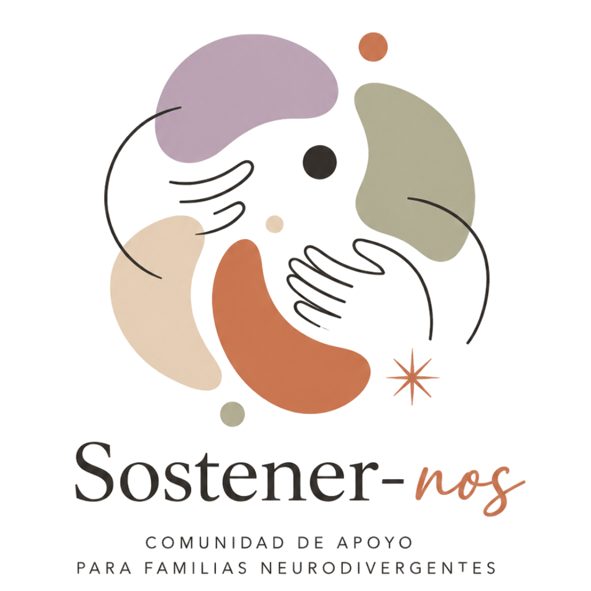
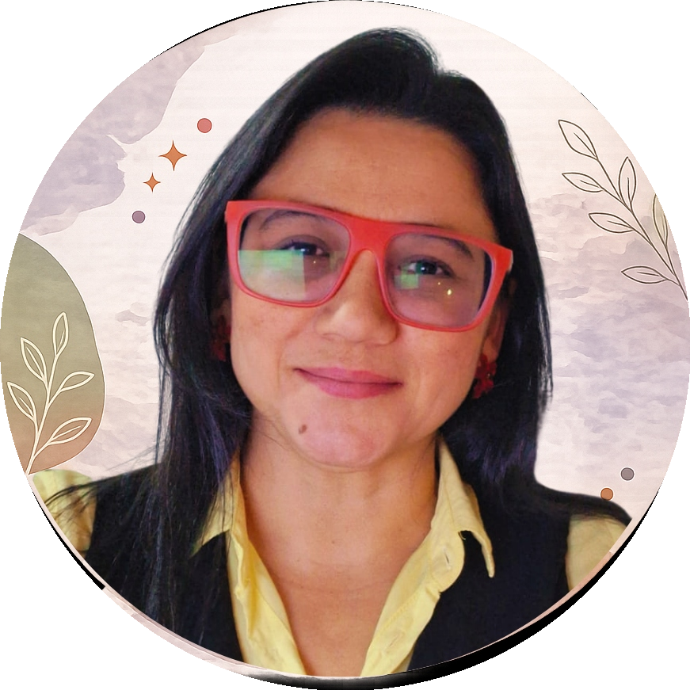
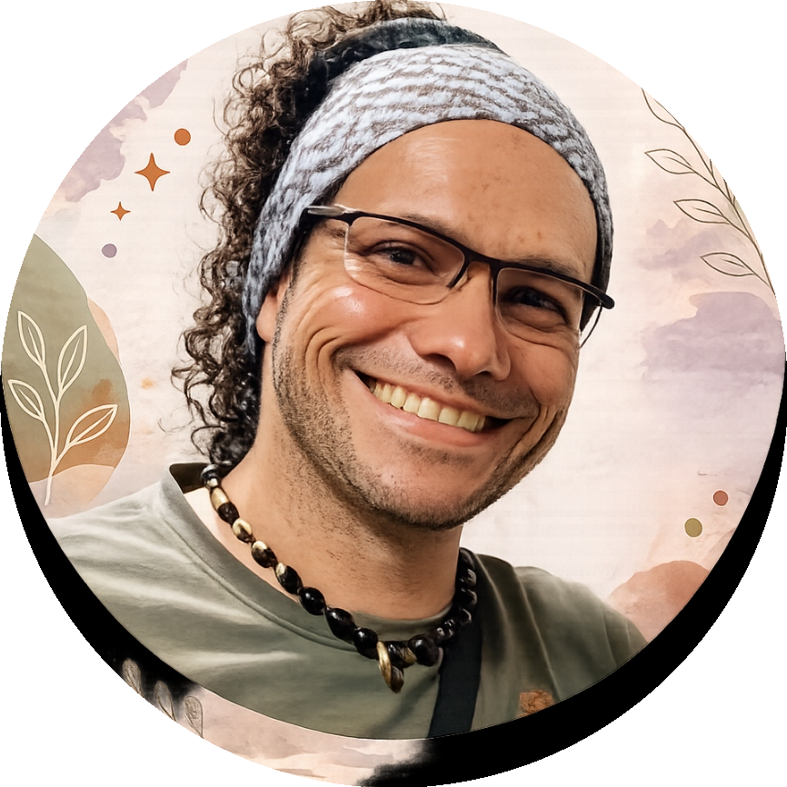

Un espacio donde ya no tienes que sostener esto a solas
La primera comunidad de acompañamiento emocional para familias neurodivergentes
Hay familias que transitan la neurodivergencia (Autismo, TDAH) intentando mantenerse fuertes todo el tiempo.
Por fuera siguen funcionando.
Pero por dentro viven agotadas.
Agotadas de:
- Sostener emocionalmente a todos,
- Buscar respuestas constantemente,
- Sentir culpa por cansarse,
- Explicar una y otra vez lo que viven,
- Y atravesar este proceso sintiéndose profundamente solas.
Sostener-nos nació para cambiar eso.
No somos solamente una comunidad sobre neurodivergencia. Somos un espacio humano de acompañamiento, comprensión y sostén emocional para personas neurodivergentes y las familias que las acompañan.
"Aquí no hablamos de diagnóstico.
Hablamos de personas y de los que sostienen todos los días"
Tal vez hoy te sientes así…
Cada etapa del camino de la neurodivergencia trae consigo desafíos únicos. Identifica en qué momento te encuentras hoy.
Si apenas estás comenzando este camino…
Tal vez sientes:
- Miedo,
- Confusión,
- Ansiedad,
- Sobrecarga de información,
- Y una necesidad desesperada de entender qué hacer.
Quizá pasas horas buscando respuestas.
Quizá tienes miedo del futuro.
Quizá sientes que nadie realmente comprende lo que estás viviendo.
Y aunque intentas mantenerte fuerte… por dentro te sientes emocionalmente desbordado.
Si ya llevas tiempo transitando este proceso…
Tal vez ya aprendiste muchísimo sobre Autismo o TDAH. Pero aun así:
- Sigues cansado,
- Sosteniendo todo,
- Viviendo en alerta constante,
- Postergándote,
- Y sintiendo que nadie pregunta cómo estás tú.
"Porque muchas veces el problema no es solamente entender el diagnóstico de la persona. Es sostener emocionalmente la vida completa después de él."
Y si llevas años recorriendo este camino…
Tal vez ya desarrollaste herramientas. Tal vez aprendiste a adaptarte. Tal vez incluso ayudas a otras familias.
Pero en silencio:
- También necesitas sostén.
Porque no quieres vivir sobreviviendo para siempre.
Quieres volver a construir bienestar, calma y una vida emocionalmente sostenible.
“No prometemos soluciones mágicas.— Luz Ayda Marín y Mauricio Martínez
Prometemos caminar a tu lado, con humanidad, criterio y presencia.”
Sostener-nos es para ti si…
Si resuenas con alguna de estas afirmaciones, has encontrado tu refugio emocional.
-
Necesitas sentirte acompañado y comprendido.
-
Quieres aprender sobre neurodivergencia desde una mirada humana y neuroafirmativa.
-
Estás agotado de sostener todo a solas.
-
Buscas una comunidad donde no tengas que explicarlo todo.
-
Deseas herramientas prácticas sin sentirte juzgado.
-
Necesitas espacios seguros para hablar de lo que realmente estás viviendo.
-
Quieres acompañar mejor sin perderte emocionalmente en el proceso.
¿Qué es Sostener-nos?
Sostener-nos es una membresía de acompañamiento emocional y formación progresiva para personas neurodivergentes y sus familias.
Un espacio creado por Luz Ayda Marín y Mauricio Martínez para acompañar el proceso neurodivergente desde la comprensión, la regulación, la humanidad, la comunidad y el sostén emocional real.
"Aquí no buscamos perfección.
Buscamos que las familias puedan vivir este proceso con más calma, claridad y menos soledad."
Una experiencia viva y acompañada
IMPORTANTE
Esta primera generación de Sostener-nos se desarrollará en modalidad guiada y en vivo.
Eso significa que durante los próximos meses iremos construyendo progresivamente cada módulo junto a la comunidad mediante:
Sesiones online en vivo
Encuentros de acompañamiento
Preguntas y respuestas
Análisis de casos
Conversaciones profundas
Espacios de sostén emocional
* Cada encuentro quedará grabado dentro de la plataforma para consumo posterior.
¿Por qué elegimos este formato?
Porque creemos que las familias neurodivergentes no necesitan solamente más información para consumir solas.
Necesitan espacios humanos donde puedan sentirse comprendidas, acompañadas, escuchadas y sostenidas mientras transitan este camino.
Por eso Sostener-nos no nace como un curso frío y completamente pregrabado. Nace como una experiencia viva, cercana y profundamente humana.
Lo que vas a encontrar dentro de la comunidad
Un ecosistema de soporte progresivo que integra formación aplicada, acompañamiento humano directo y comunidad activa.
Formación progresiva y acompañada
A lo largo de la experiencia iremos desarrollando los distintos módulos temáticos de la comunidad. Cada uno diseñado para ayudar a las familias a comprender y transitar la neurodivergencia con más claridad y menos agotamiento emocional.
Sesiones online en vivo
Tendrás encuentros acompañados donde podremos profundizar temas, resolver dudas, trabajar situaciones reales y conversar desde la experiencia humana.
Espacios mensuales de P&R
Un espacio seguro donde puedas expresar dudas, compartir experiencias, recibir orientación y sentirte acompañado.
Casos de estudio y análisis
Porque muchas veces escuchar otras experiencias también ayuda a comprender y ordenar lo que vivimos en el día a día.
Comunidad privada
Un espacio donde no tengas que justificar constantemente lo que sientes. Donde puedas encontrar comprensión, humanidad, validación y pertenencia.
Módulos Temáticos de la Formación
Haz clic en cada módulo para desplegar su contenido temático:
Un pago único vitalicio • Acceso ilimitado de por vida
Esta comunidad fue creada por
Dos profesionales unidos por la convicción de que las familias neurodivergentes merecen espacios seguros y acompañamiento sin juicios.

Luz Ayda Marín
Psicóloga y neuropsicóloga clínica especializada en neurodivergencia.
Con experiencia en:
- Evaluación e identificación diagnóstica
- Acompañamiento psicológico
- Autismo y TDAH
- Neurodivergencia en el ciclo vital
- Acompañamiento terapéutico desde una mirada respetuosa y neuroafirmativa.
"Las personas neurodivergentes y sus familias necesitan redes de apoyo humanas, compasivas y sostenidas."

Mauricio Martínez
Psicólogo, estratega digital y constructor de comunidades humanas.
Acompaña especialmente:
- Los espacios de contención emocional
- La construcción de comunidad
- Los procesos de transformación emocional
- La creación de entornos donde las familias puedan sentirse vistas y acompañadas.
"Muchas veces las personas no necesitan más exigencia. Necesitan espacios seguros donde puedan respirar un poco."
ÚNETE A LA GENERACIÓN FUNDADORA DE SOSTENER-NOS
Empieza a transitar la neurodivergencia (Autismo y TDAH) con más comprensión, calma y sostén emocional.
Como miembro fundador recibirás:
- Acceso preferencial a la comunidad completa.
- Participación activa en la construcción viva del programa.
- Acceso progresivo a todos los módulos desarrollados durante tu permanencia.
- Grabaciones completas de las sesiones en vivo dentro de la plataforma.
- Acompañamiento más personalizado y cercano con Luz y Mauricio.
- Precio fundador especial de pago único e irrepetible.
- Acceso prioritario a futuras mejoras y expansión del programa.
¿Por qué abrimos esta posibilidad solo ahora?
Porque esta primera generación tendrá algo que las siguientes no tendrán: cercanía directa en la construcción, participación activa en el programa, condiciones irrepetibles y un pase vitalicio exclusivo.
ACCESO FUNDADOR VITALICIO
Primera Generación Sostener-nos
UN ÚNICO PAGO PARA SIEMPRE
Sin mensualidades • Sin renovaciones ocultas
QUIERO FORMAR PARTE DE SOSTENER-NOS
¡Atención! En futuras etapas, Sostener-nos funcionará bajo membresía mensual, semestral o anual. A medida que la comunidad crezca, el acceso fundador desaparecerá y el valor aumentará.
Tu pase vitalicio de un único pago incluye acceso permanente a:
LO MÁS IMPORTANTE
Sostener-nos no busca que hagas todo perfecto. Busca que puedas vivir este proceso con más calma, más comprensión, más humanidad y menos soledad.
"Porque no deberías sostener todo esto a solas."